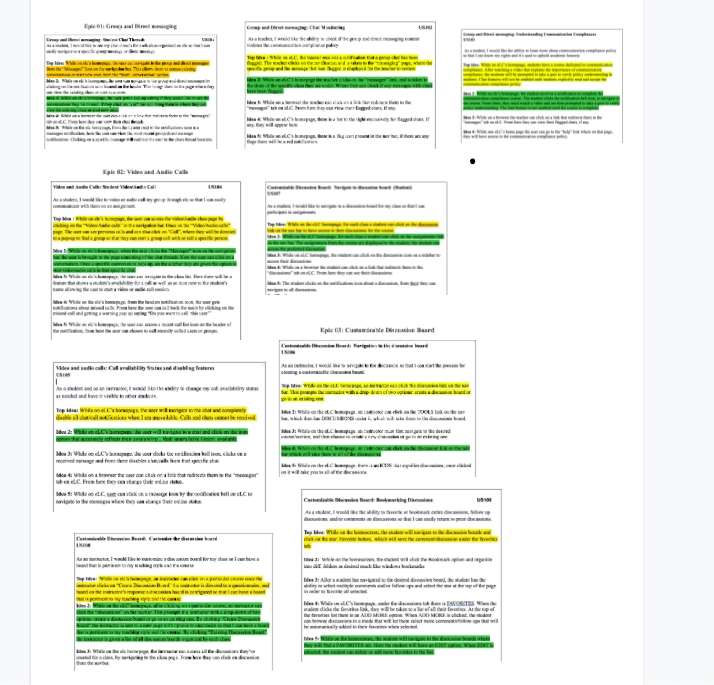

Milestone 3: Design Alternatives
A. User Experience Requirements
Initially, we had a problem at hand, why do professors and students resort to external platforms, despite the disadvantages and the uncertainty that comes with it? Thus, our solution came into play: what if we were to offer students and professors all the benefits of using external platforms without the uncertainty and confusion. Therefor, our solution is to integrate group/direct messaging features with a communication compliance policy, video/audio calls, and customizable discussion boards into eLC.
We decomposed our proposed solutions from milestone 2 and turned them into user stories. We organized them into a hierarchy of three activities: Group and Direct Messaging, Video and Audio Calls, and Customizable Discussion Board.
Group and Direct Messaging with a Communication Compliance Policy
Video and Audio Calls
Customizable Discussion Board
Relevant User Stories and Justifications
User Story 01:
As a student, I would like to see my chat threads for each class organized on elc so that I can easily navigate to a specific group message or direct message.
Justifications:
We choose this user story as one of the most relevant since it directly relates to our initial problem, "Why are instructors and students resorting to external platforms despite uncertainty and confusion it causes in students." In a literary article by Chugh et al, They research and review "Social media usage by higher education academics" while reading the report the section dealing with the 'challenges and barriers of using social media' in higher education particularly stood out. As we have discussed, students can attest to the confusion and also uncertainty that comes with using external platforms for school work. Similarly Chugh et al, mention, "Donelan (2016) found that the main barriers offered by academics for not using social media included lack of time (time to learn and use social media); lack of confidence, ability and skills; lack of interest; and negative perceptions (particularly with regard to the use of Twitter and blogs) in terms of the usefulness of social media to complement learning and teaching. More recently, Sapkota and Vander Putten’s (2018) study on social media in learning and teaching established that although academics accepted the importance of social media as a tool to use in business, they could not agree on its inclusion in the curriculum." This literary review showcases the uncertainty that external platforms(social media) cause among the other issues that it entails. We have also taken a look at previous cases where students utilizing external group direct messaging were caught in instances of academic dishonesty due to other students in the chat oversharing assignment information. In an article by The Signal, they warn students about academic dishonesty at Georgia State, they start off by mentioning why students use group me in the first place "Apps like GroupMe could help students keep in touch with their classmates outside of the classroom, reminding each other of upcoming assignments and what happened in class if they are absent from class."(Jones 2021). This user story is relevant since it addresses our proposed solution of integrating group/direct messaging capabilities to address our root problem. Thus integrating this feature in addition to a communication compliance policy to elc, would immensely help students feel less confused and also foster a platform that embodies academic honesty.
User Story 02:
As an instructor, I would like the ability to check if the group and direct messaging content violates the communication compliance policy.
Justifications:
As discussed previously, alot of instances of academic dishonesty as they pertain to external platforms
are reported. Especially as it deals with messaging platforms such as groupme, we not only want to
incorporate a messaging platform into eLC but we also want to mitigate and prevent academic dishonesty
that messaging platforms can sometimes enable. For instance during the pandemic because of the increased
reliance on social media and the lack on integration we saw a surge in academic dishonesty as it relates
to social media platforms, in an article warning Georgia State university about cheating through groupme
author Jones says "This semester, students relied on GroupMe more than ever due to most classes being
online. The app's increased use led to more cheating scandals and inappropriate messages circulating
in an environment meant to be educational." Thus with our suggested solution of incorporating a messaging
platform with the communication compliance policy addition, will help students feel certain and safe.
We decided that incorporating the communication compliance policy from Microsoft office would be the best, after
extensively researching the plethora of chat monitoring systems out there. Microsoft 365 uses a Communication Compliance Policy
and says , "Communication compliance helps minimize communication risks by helping you detect, capture, and act on inappropriate
messages in your organization." Having a policy like this incorporated into the messaging platform would prevent and minimize problems
like academic dishonesty.
We think this is the best solution since it's used within Microsoft teams and offers admins the opportunity to monitor the interactions
in a non-invasive way in terms of privacy.
User Story 03:
As a student, I would like the ability to learn more about communication compliance policy so that I can know my rights and its use to uphold academic honesty.
Justifications:
The communication policy is a safety measure for the elc messaging feature to uphold the academic
policy allowing students peace of mind as they partake in group chats for classes. Like we have
talked about in Milestone 1 and 2, with external platforms like groupMe or whatsApp, students can
often find themselves in trouble for violating academic honesty sometimes for situations they had
no hand in. Thus implementing the communication compliance policy mitigates the problem at hand
and making sure the students are as informed about the Communication Compliance Policy that is
upheld through the messaging platform within elc, will allow them to understand what it is before
it is enforced. A column from GaleOnefile wrote, "Unstandardized policy leads to student confusion
and frustration as students try to understand the different ways professors view collaboration on
GroupMe and other messaging platforms. The more involved professors are in determining their policy,
the more secure students will feel." Having a mandatory course that students can access at all times
and must take at least once, will decrease confusion and frustration about the policy. This will also
make students feel like they are not being monitored in an invasive way since they will understand
exactly what the policy is and does.
In the article by Jones, she interviews Dr. Michael
Sanseviro, Georgia State’s Dean of Students who says "GroupMe cases can be very complex to
know for sure who was involved in what specific violations when so many students have access,
which is why the university tries to educate students about the standards of academic integrity and the
potential consequences," thus having a course that keeps students informed about what's happening behind
the hood for the chats will help them build trust in the platform. Thus addressing our solution of why it's important
to implement communication compliance into the elc messaging feature
User Story 04:
As a student, I would like to video or audio call my group through elc so that I can easily communicate with them on an assignment.
Justifications:
Going back to our initial problem, students and professors resort to external platforms to access
functionalities like group and direct messaging as well as video and audio calls. Over the past few
years we have seen how much companies such as Zoom and Cisco webex have benefited. While it's great
that they get alot of market from students, let's ask ourselves at what expense on the students' part.
It's never convenient having to access your scheduled zoom calls through zoom. I asked a fellow
student what her day to day process is when attending a scheduled zoom call, first she said she has
found a link to the meeting, there are no reminders unless you link zoom to your calendar so students
sometimes end up forgetting. Once you have a meeting ID or link you then join the meeting. The frustration with Zoom
is a pretty consistent one among students. However, if video/Audio calls were to be integrated into eLC at least for
higher education use. A student would get reminders, whenever there is a meeting they need to attend and they can join
right from the elc tab or even invite classmates by finding them by name. They will also have video/audio calls related to school organized in one place.
In an article discussing the 'importance of video conferencing in education', the authors at MacCormac College says
"There are various technologies instructors can use — from simply pre-recording or live streaming their lessons to interactive video conferencing
software. There are several potential advantages of video conferencing in education" including but not limited to Content sharing,
connecting students with their in-class peers, Connecting participants, Recording functionality, Engage others, Interaction and
collaboration with ease. Thus this user story is relevant to our solution since it allows students to use elc for all
their needs with no need to access external video/audio call platforms.
User Story 05:
As an instructor, I would like to customize a discussion board for my class so I can have a board that is pertinent to my teaching style and the course.
Justifications:
Discussion boards are an effective way to promote not only student to student interaction, but also student/teacher interaction, and overall engagement. Initially we understood that professors tend to resort to external discussion platforms such as Top Hat and Piazza because they each offer different facets to hold discussions in-class. Thus our solution came into play. We wanted to offer professors the flexibility of customizing discussion boards based on the purpose the discussion board is meant to serve. If professors can for instance generate multiple discussion boards for a class based on the purpose they wouldn't have to resort to external platforms. Let's explore the logo generating questionnaire utilized by wix. When a user decides to generate a logo, a set of questions are asked to get a sense of how the user wants the logo to look, make the audience feel and the purpose its supposed to serve. After completing the questionnaire a set of logo's are generated on wix so that the user can pick the one that serves their purpose the best.(Wix Support) WIX uses questionnaires to generate something custom for their user, the same idea can be applied to generating a custom discussion board for instructors. This way they can have a discussion board that fits their teaching style and content type making the process efficient/convenient thus limiting the professors from resorting to external platforms.
B. Ideation and Prelimenary Designs
For each of the relevant user stories above we identified and justified
in (A), we generated numerous ideas for alternative design solutions that could
be used to tell that story, and then we picked and described our top two for that
story. We used Google Docs for our ideations, as it was the best way for us to
organize all of our user stories and ideas in a concise manner.
Our ideation
process for this part consisted of generating ideas together for each relevant
user story then we highlighted the second best ideas for each user story in green,
and in yellow our top idea.
https://www.figma.com/file/yNbcjAKKP0fvTmoBu5srGN/HCI-Milestone-3-Ideation?node-id=647%3A1375
User Story 01:
As a student, I would like to see my chat threads for each class organized on elc so that I can easily navigate to a specific group message or direct message.

Top ideas:
Low-Fidelity design:
Second Best Idea
Low-Fidelity design:
Description
We decided to go with this one as our top idea because we believe that the navigation bar is the best design for students to get to their messages. Having the navigation bar allows for students to have easy access to their messages for each course. A paper on the usability of a navigation bar says, "Menus are the main form of navigation in web pages and should be designed to allow intuitive, efficient and effective navigation, according to the user's perception and to encourage the exploration of the site." Having a "Messaging" link in our navigation makes finding their messages easy and systematic.
User Story 02:
As an instructor, I would like the ability to check if the group and direct messaging content violates the communication compliance policy.

Top ideas:
Low-Fidelity design:
Second Best Idea
Low-Fidelity design:
Description
We went with this design because we want the teacher to be notified when a chat has been flagged instead of having to click the messaging link , but not actually knowing if anything was flagged.
User Story 03:
As a student, I would like the ability to learn more about communication compliance policy so that I can know my rights and its use to uphold academic honesty.

Top ideas:
Low-Fidelity design:
Second Best Idea
Low-Fidelity design:
Description
Regardless of which idea we chose, it was important to us that we made the Communication Compliance Policy an actual mandatory course. Instead of different ideas in general, we came up with different ideas on how to navigate to it. Like we have stated in our justifications, we want the students to be as informed as possible on this so that they feel comfortable with the policy and up to date.
User Story 04:
As a student, I would like to video or audio call my group through elc so that I can easily communicate with them on an assignment.

Top ideas:
Low-Fidelity design:
Second Best Idea
Low-Fidelity design:
Description
We went with this idea asour top idea because a separate video/audio call link in the navigation bar effectively signifies that video/audio calls are a feature from the home page itself, in contrast to our second best idea. In our second best idea, the student is only aware of this feature once they are under a specific chat.
User Story 05:
As an instructor, I would like to customize a discussion board for my class so I can have a board that is pertinent to my teaching style and the course.

Top ideas:
Low-Fidelity design:
Second Best Idea
Low-Fidelity design:
Description
We chose this design as our top idea because the instructor is immediately presented with the option to create a new discussion board and questionnaire unlike our second best idea which first requires the instructor to pick a specific class and only then is presented with the existing discussions and create a new discussion questionnaire.
C. Detailed Designs: Best Design Alternatvie fo each Relevant User Story
User Story 01:
As a student, I would like to see my chat threads for each class organized on elc so that I can easily navigate to a specific group message or direct message.
Best design alternative:
While on elc's homepage, the user can navigate to the group and direct messages from the "Messages" Icon on the navigation bar. This allows them to access existing conversations or start new ones from the "Start Conversation" option.
Detailed Figma Design:
Justification for design decisions and why it's the best design:
We picked this as the best design decision since we wanted to keep the access points for the audio/video call, messaging and discussion board consistent. So that the user can have less to think about when navigating the pages. So we have a drop down for the messages from here the user is able to access both past and create a new message from a pop up. When on the existing messages page the user can also start a new conversation from there. This design decision was the best since it gave the user less to think about and more convenience. We thought usability and user happiness when using our system was the most important thing so making the system intuitive was a big factor we considered.
User Story 02:
As an instructor teacher, I would like the ability to check if the group and direct messaging content violates the communication compliance policy.
Best design alternative:
While on eLC, the teacher receives a notification that a group chat has been flagged. The teacher clicks on the notification and is taken to the "messaging" page, where the specific group and the message that was flagged is displayed for the teacher to review.
Detailed Figma Design:
Justification for design decisions and why it's the best design:
For our second user story, we picked this as our best design because unlike the low fidelity where the actual message under review is immediately displayed, which may propose issues with student privacy, in the high fidelity the sender and recipient name, date, and action options are displayed. In our high fidelity design of this new feature, we have maintained eLC's clean,simplistic design and color pallete as well as updating the table to be more visually pleasing and uniform to eLCs current design. A simplistic design helps users to see the core elements of the interface and makes the user journey intuitive and purposeful. We've also implemented a Keyword Manager. You can see the prominent "Manage Keywords" button effectively enhances usability and visual harmony of the interface. Once clicked, professors are enabled with the ability to add any keywords that they feel are relevant in detecting and controlling instances of academic dishonesty as well as use of hateful, offensive, and threatening language.
User Story 03:
As a student, I would like the ability to learn more about communication compliance policy so that I can know my rights and its use to uphold academic honesty.
Best design alternative:
While on elc's homepage, students have a course dedicated to communication compliance, hereafter watching a video that explains the importance of communication compliance, the students will be prompted to take a quiz to verify policy understanding in students. Chat features will not be enabled until students explicitly read and accept the communication compliance policy.
Detailed Figma Design:
Justification for design decisions and why it's the best design:
Because students on eLC access their courses on the home page we thought we should end up keeping it consistent, thus we chose this design instead of having a pop up notification.
User Story 04:
As a student, I would like to video or audio call my group through elc so that I can easily communicate with them on an assignment.
Best design alternative:
While on elc's homepage, the user can access the video/Audio class page by clicking on the "Video/Audio calls" in the navigation bar. Once on the "Video/Audio calls" page. The user can see previous calls and can also click on "Call", where they will be directed to a pop-up to find a group so that they can start a group call with or call a specific person.
Detailed Figma Design:
Justification for design decisions and why it's the best design:
The design decision for this idea was made based on Microsoft Teams which is an extensively used software. We've all used Microsoft teams and we loved the usability there so we though why not extend it to this video/audio calling platform on elc. The design decision for the drop down was made because we thought it is convenient for the user to access both existing and new conversation from the same location. We picked this design as our best design alternative since it provides the user an easy way to access the audio and video call. From the homepage you can start a new call or you can access the existing calls. Due to the convenience, intuitiveness and user friendliness of this design it became the best design alternative.
User Story 05:
As an instructor, I would like to customize a discussion board for my class so I can have a board that is pertinent to my teaching style and the course.
Best design alternative:
While on elc's homepage, an instructor can click on a particular course once the instructor clicks on "Create Discussion Board" the instructor is directed to a questionnaire, and based on the instructor's response a discussion board is configured so that I can have a board that is pertinent to my teaching style and the course.
Detailed Figma Design:
Justification for design decisions and why it's the best design:
The decision to have the drop down for the discussion board came from our past designs and also the current elc design. We thought that it would be convenient to be able to create a new discussion board or access the past discussion board from the same area. However, we also added the flexibility to be able to create a new discussion board from the existing discussions boards page. This design has been a uniform way for the audio/video call and messaging as well. We thought having consistent design decisions with all the implementation would help us help the user make less decisions for a more happy/convient interaction with the system.
D. Summary Video
Milestone3 VideoReferences:
Jones, Jada. “Georgia State Students Warn about Cheating through Groupme.” The Signal, 11 June 2021
Santos, Eduardo & Lara, Silvana & Watanabe, Willian & Filho, Mario & Fortes, Renata. (2011). Usability evaluation of horizontal navigation bar with drop-down menus by middle aged adults. SIGDOC'11 - Proceedings of the 29th ACM International Conference on Design of Communication. 10.1145/2038476.2038504
“Online Programs: Customizing and Managing Your Questionnaire.” Wix Support